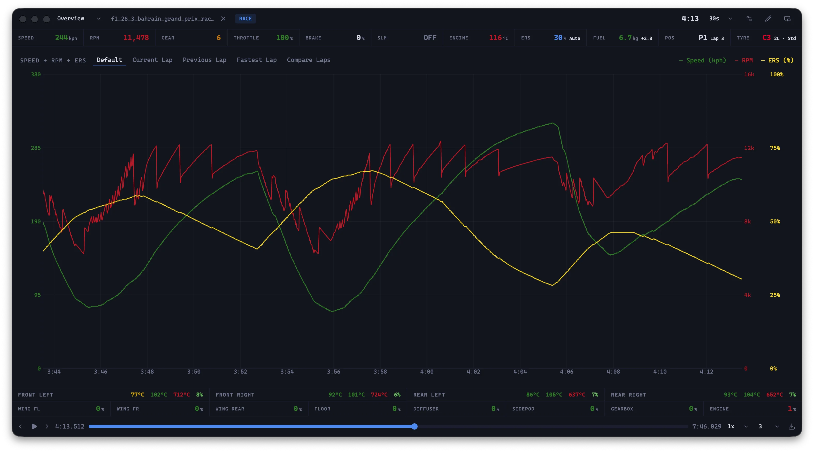
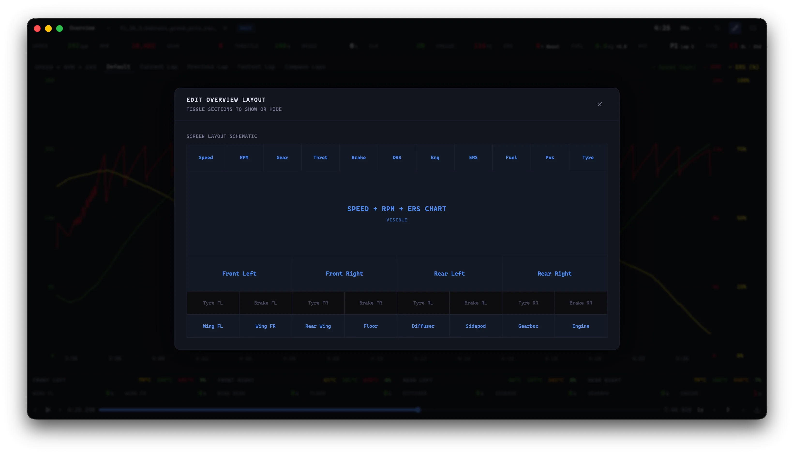
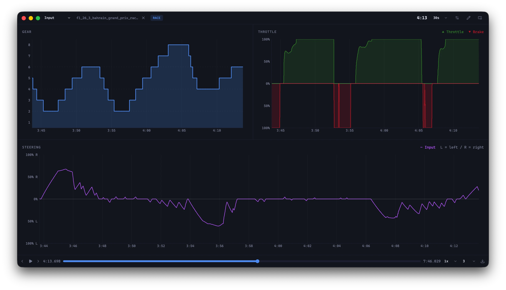
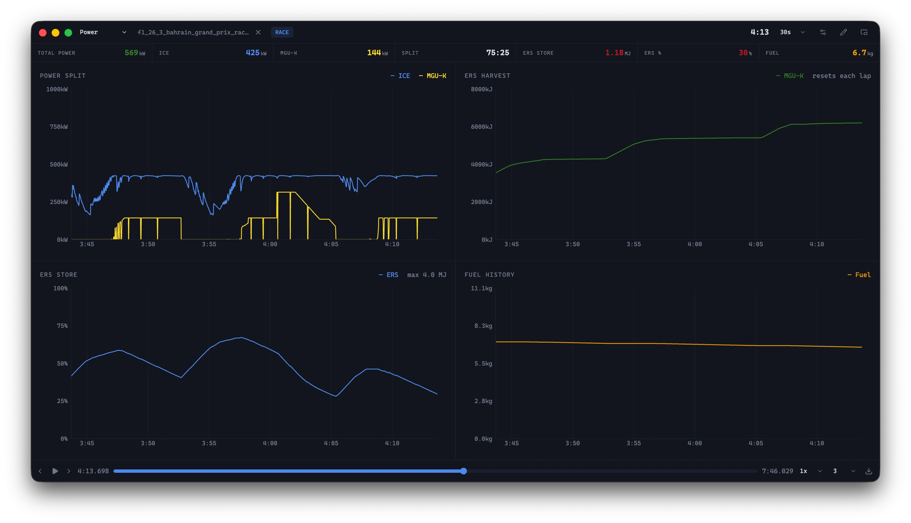
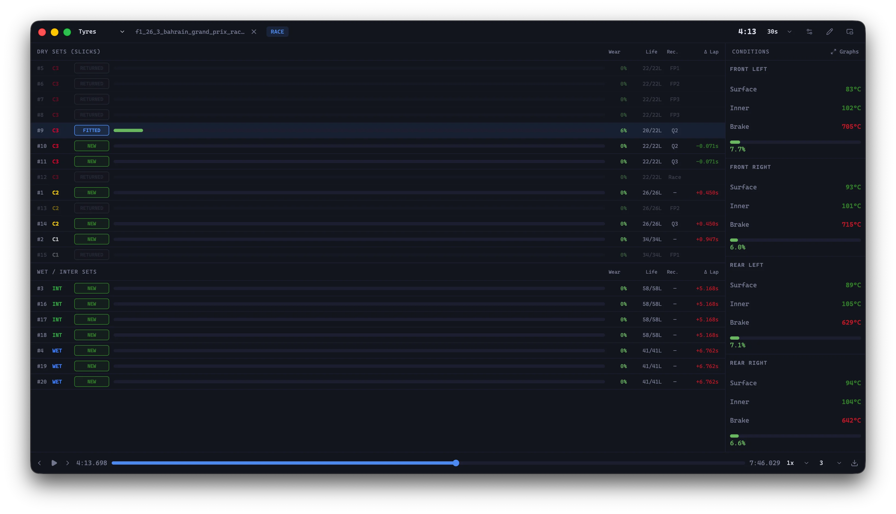
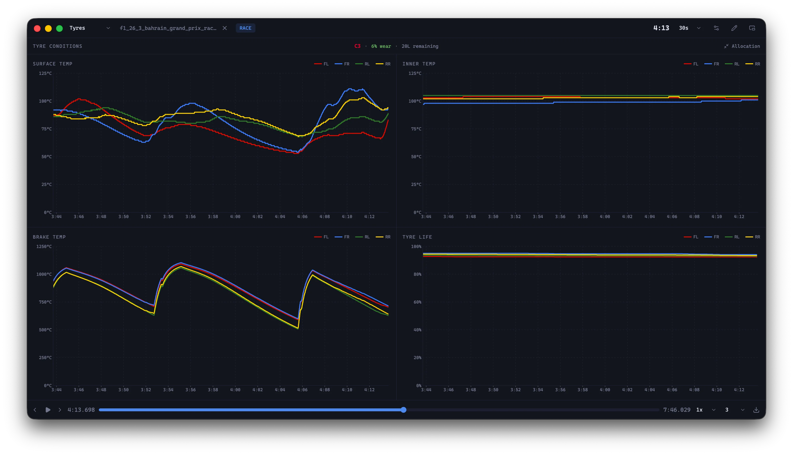
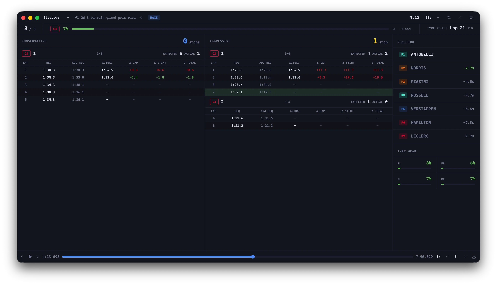
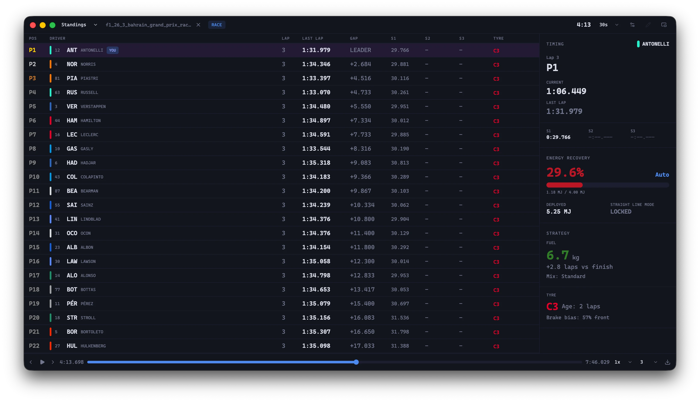
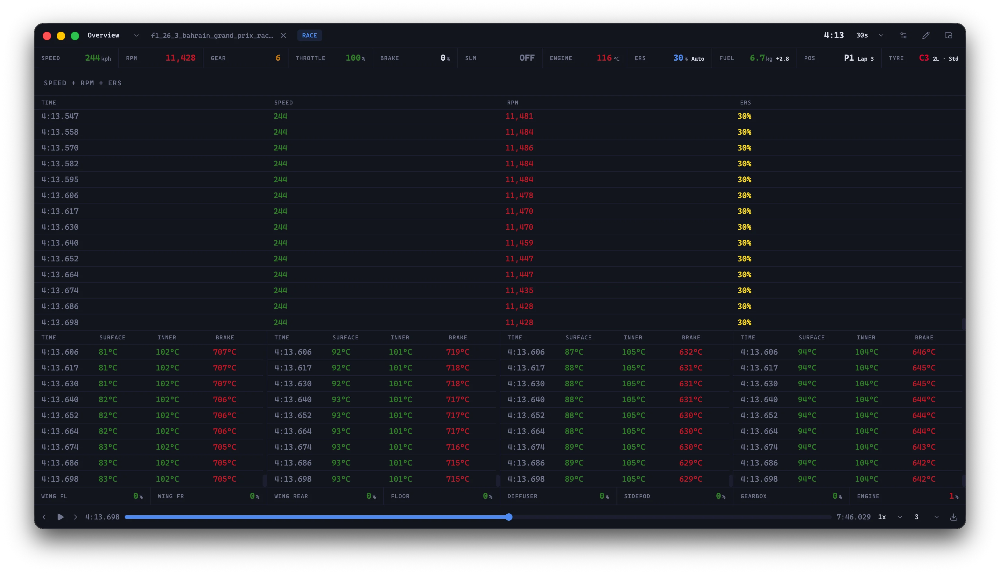

Extract every
last tenth.
Track N Race is a telemetry recording and analysis tool designed for the F1 games. Analyze and find out where you lose that extra tenth over your competitors. Supports F1 24, F1 25 and the 2026 DLC pack.


Layout Editor
Enable or disable cards based on your needs.

Inputs
Track your acceleration, brake, gear and steering inputs. Duh.
Deep Analysis
Compare your laps to identify time gains and losses.

Power
Track engine and fuel status.

Tyres
Get a list of all the available compounds for the weekend

Tyre Graphs
Monitor compound degradation, surface, and inner carcass temperatures.

Race Strategy
This is a work in progress so expect strategies to be ... closer to Monaco 2022.
Session
Track info about your current session with a map of the circuit.

Standings
It's a timing tower ... if you are looking at race telemetry software, you know what a timing tower is. I am not explaining that.

Data Tables
If you don't want graphs, you can swap them out for tables.